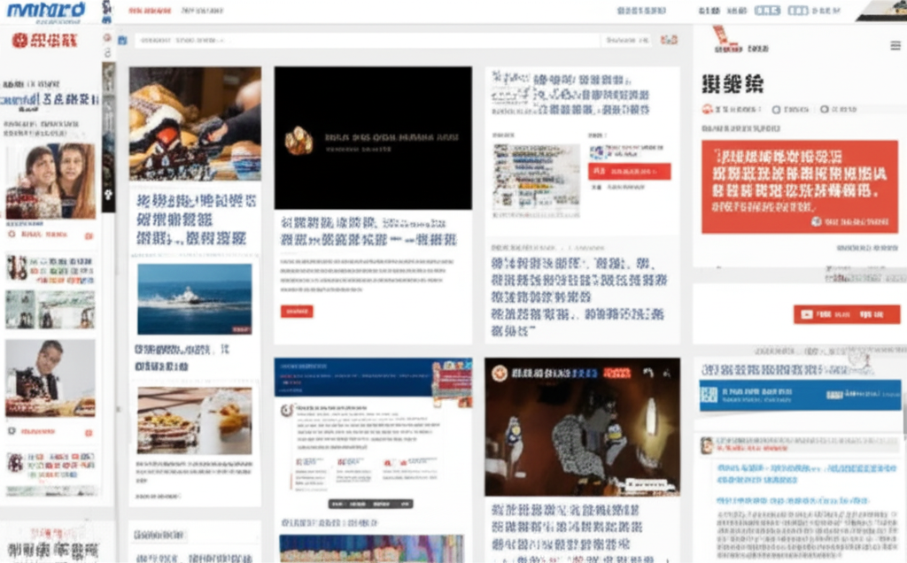

# 近期新聞摘要：健康、安全與政治
## 引言
近期新聞內容豐富多元，涵蓋健康醫療、網路安全以及國際政治等領域。從兒童高血壓的預防與治療，到詐騙APP的威脅，再到台海局勢的潛在風險，各個面向都值得關注。本文將針對這些熱點新聞進行簡要概述。
## 主體內容
### 第一點：健康醫療關注 - 高血壓與心律不整
新聞中多次提及高血壓，從兒童高血壓的預防（名醫會客室／您家中兒童有量血壓嗎？兒童也會高血壓！），到成人高血壓的控制（氣喘和心悸好困擾「心律不整電氣燒灼術」助改善；台灣好新聞TaiwanHot提及的陳小姐案例），都顯示高血壓已成為普遍的健康問題。基隆長庚的活動也關注了社區居民的血壓血糖控制。此外，針對心律不整，也報導了改善方式。需要注意的是，胸腔病院的藥品查詢結果中，也提到了藥物的副作用，值得關注。兒童肥胖與高血壓的關聯也受到重視（童胖非福當心高血壓.脂肪肝上身2025061609）。
### 第二點：網路安全警訊 - 詐騙APP與個資外洩
藍心湄下載「實用APP」淚曝手機全中毒！釣出一大堆受害者：我 ... 這則新聞提醒大眾，網路安全風險無處不在。標榜可以量血壓的APP可能暗藏詐騙陷阱，導致個資外洩。在下載APP時，務必謹慎查證，避免成為詐騙受害者。
### 第三點：國際政治觀察 - 台海局勢與中共軍事威脅
大紀元的新聞報導指出，中共可能以自殺式海戰計劃威脅台灣。儘管這只是一種推測，但仍突顯了台海局勢的緊張。新聞中提到，中共可能不惜代價延遲美軍及其盟友的馳援，這表明潛在衝突的嚴重性。
## 結論
綜上所述，近期新聞反映了我們在健康、安全和政治上面臨的多重挑戰。關注健康問題，提高網路安全意識，並持續關注國際局勢，是我們應對這些挑戰的關鍵。